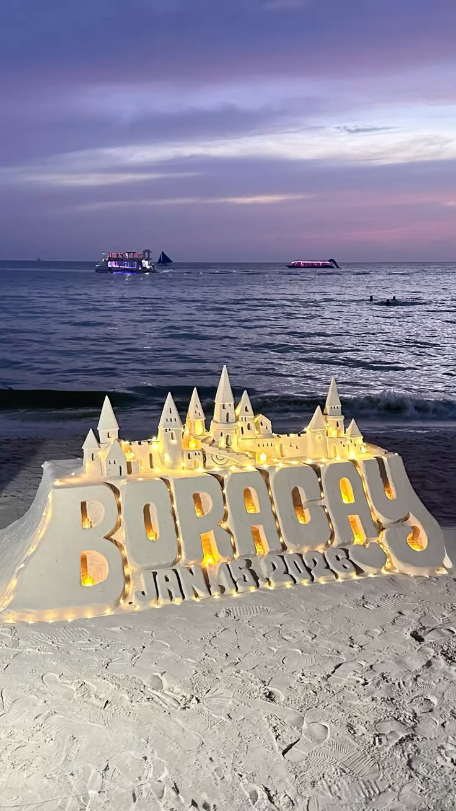

Boracay
A small island with one of the most famous white sand beaches in the world.
Home / Destinations / Boracay · Aklan, Western Visayas
About Boracay
Boracay is a small island in the Visayas whose White Beach has soft, pale sand and clear turquoise water. The beach is busy and social in the evening and quiet early in the morning.
Away from White Beach, you can find calmer coves, viewpoints and water sports on the east side of the island.
What to do
- Sunset paraw sailing: take a traditional sailboat out on the water as the sun goes down.
- Puka Shell Beach: a quieter beach on the northern end.
- Mount Luho: a viewpoint over the island and the sea around it.
Travel tip
Boracay has strict environmental rules. Pick up your trash, avoid single-use plastics and respect the beach.
Photo gallery
Watch: Boracay
If the embedded video shows Error 153, open this website through a local web server (for example VS Code Live Server) instead of opening the HTML file directly.
Open this video on YouTube (opens in a new tab)
Want more? Search for Boracay videos on YouTube (opens in a new tab).
Things to book
Sunset paraw sailing
Glide out on a traditional sailboat as the sun goes down.
Find tours for Sunset paraw sailing (opens in a new tab)Island hopping and snorkeling
Visit nearby coves and reefs by boat.
Find tours for Island hopping and snorkeling (opens in a new tab)Water sports
Try parasailing, banana boat rides or kitesurfing at Bulabog.
Find tours for Water sports (opens in a new tab)Mount Luho and island tour
See the island from above, then stop at the quieter beaches.
Find tours for Mount Luho and island tour (opens in a new tab)
Plan and book your trip to Boracay
Compare tours and places to stay on these booking sites. Prices and availability change, so check the details before you pay.